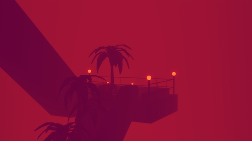
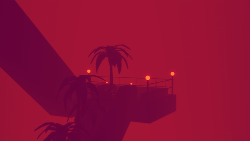

Liminal spaces
I've always found liminal spaces, those odd facets that don't quite seem to match the rest of reality, oddly beautiful. I'm not sure what about them I've feel drawn to, but they're just something which I find fascinating. Here are some great examples, created by the talented Carl Burton.

 
Incoming:

Incoming: